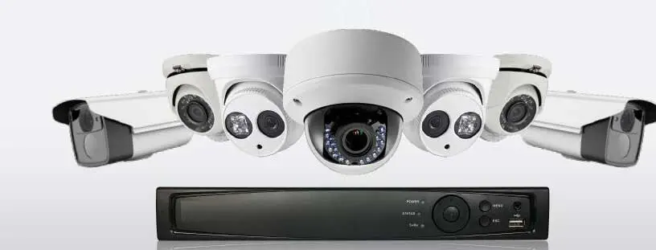

Complete security camera installation for homes, shops, offices & factories in Bhuj by certified experts since 1993.
Looking for reliable CCTV installation services in Bhuj? Hari Tech Solutions provides complete security camera solutions for residential and commercial properties across Bhuj and the Kutch region. We supply, install, and service trusted brands including Hikvision, CP Plus, and Securus.
A well-installed CCTV system protects your home, shop, or office. Our technicians in Bhuj ensure optimal camera placement, neat cable management, DVR/NVR configuration, and full mobile viewing setup so you can monitor your property from anywhere. We have served Bhuj customers since 1993 and our after-sales support ensures your security system stays operational long after installation.
Whether you need a basic 2-camera system for your Bhuj home or a comprehensive 16-camera setup for a large commercial space, we design and install the right solution within your budget. Our team handles everything from site survey and planning to final installation and training on how to use the system.
Security is not a luxury—it is a necessity. Businesses in Bhuj that invest in good CCTV systems experience fewer incidents of theft, better employee accountability, and greater peace of mind. Homes with CCTV cameras are safer and insurers often offer better rates to properties with surveillance systems installed by certified professionals like Hari Tech Solutions.
Complete CCTV setup for homes, shops, offices and factories in Bhuj.
Monitor your Bhuj property from your smartphone anywhere in the world.
Repair and maintenance for existing CCTV systems in Bhuj.
Protect your family and home in Bhuj with affordable CCTV cameras.
Hikvision, CP Plus, Securus — trusted CCTV brands with excellent reliability.
Clean wiring, professional mounting, comprehensive system configuration.
Quick support for maintenance, upgrades, and troubleshooting in Bhuj.
Value-focused CCTV solutions tailored to your budget and needs.
CCTV systems start from ₹2,999 for 2 cameras. We provide a free site survey and quote before starting any work.
Hikvision, CP Plus, and Securus are our recommended brands for CCTV installation in Bhuj.
Yes! We configure remote viewing so you can monitor your Bhuj property from anywhere via smartphone.
2–4 cameras is sufficient for most shops in Bhuj. Our technician does a free site survey to recommend the optimal setup.
Yes, we repair and maintain existing CCTV systems across Bhuj and Kutch, regardless of the original installer.
Contact Hari Tech Solutions for a free site survey and affordable CCTV installation in Bhuj and Kutch.
Also explore: Computer Repair | Network Services | All Services | Contact